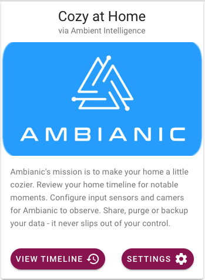
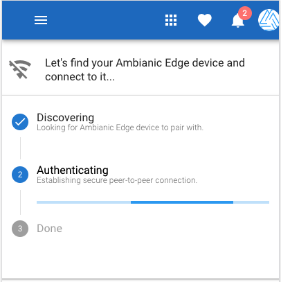
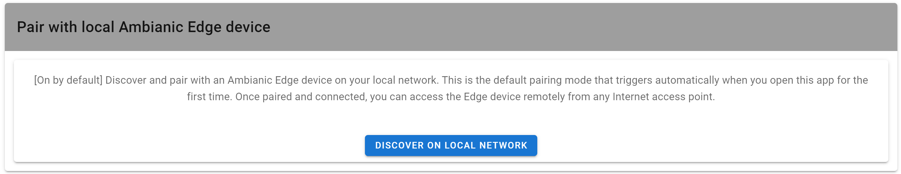

This is an overview of the connection flow between Ambianic UI and Ambianic Edge
Upon starting the Ambianic Web UI, it will automatically start searching for an Ambianic Edge on your own local network.

Either press VIEW TIMELINE to see the data from your own Edge, or press SETTINGS if you wish to connect to someone else's Edge (remote connection) or see details about your own Edge.
If you are not connected to a network, you will see a card showing that the UI is looking for an Edge on your local network.

Once connected, it will change to:

If you don't want to be connected to your own netwrok, for example you want to connect to your parents Edge, you can scroll down to Pair with Remote Ambianic Edge device and enter the PeerJS ID you get from them.

Enter the Peer JS ID in the input field and press PAIR REMOTELY.
Once connected, click on the link Timeline to see the Edge's data.
When done, go back to Settings and use DISCOVER ON LOCAL NETWORK

This will make sure you get disconnected from the remote Edge and connect back to your own local network Edge.